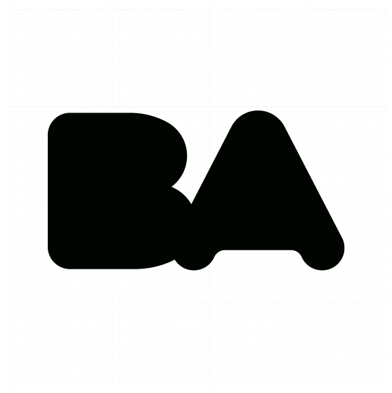
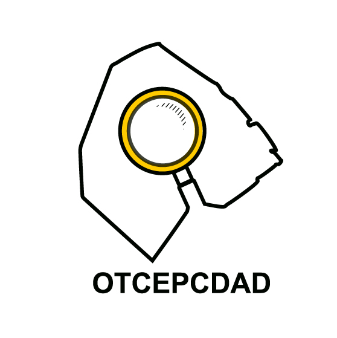

-

BOLETIN OFICIAL - USIG
-

CARPETA COMPARTIDA OTCEPCDADPuedes acceder a la intranet desde la VPN o desde tu computadora de la oficina. Desde la oficina, solo debes ingresar la URL en la barra de búsqueda de tu navegador. Desde una computadora personal, es necesario estar conectado a la VPN. Asegúrate de estar correctamente logueado en la VPN antes de intentar acceder a la intranet.
- DDJJ
- GUIA FUNCIONARIOS
- GESTOR DE TAREAS OTCEPCDAD
- INTRANET POLICIA
- NORMATIVA
- MATRIZ MEDIOS (GOCI)
- ORDENES DEL DIA
- OUTLOOK
- ORGANIGRAMA GCABA
-
 SADE / PORTAL
SADE / PORTAL
Sistema de administración de documentos electrónicos: Pase de Expedientes. Digitaliza todos los trámites y comunicaciones del Poder Ejecutivo del Gobierno de la Ciudad de Buenos Aires.
- SIGAD
- SIGENO
- SINE
- SIPAP
- SIRHU
- SISEP
- SMLAM
- SAS Prod
- Trello
- TABLERO DE CONSULTA (GOCI)
- ZOOM
-
SADE / PORTAL
Sistema de administración de documentos electrónicos: Pase de Expedientes. Digitaliza todos los trámites y comunicaciones del Poder Ejecutivo del Gobierno de la Ciudad de Buenos Aires.